GELENEKSEL EL İŞÇİLİĞİNDEN MODERN ZANAATE
Nesilden nesile aktarılan el emeği, geliştirilen modern makinelerle birlikte ahşabın eşsiz ruhu.
ZANAATİMİZLE HAYAT BULAN
ATÖLYEMİZDEN KARELER
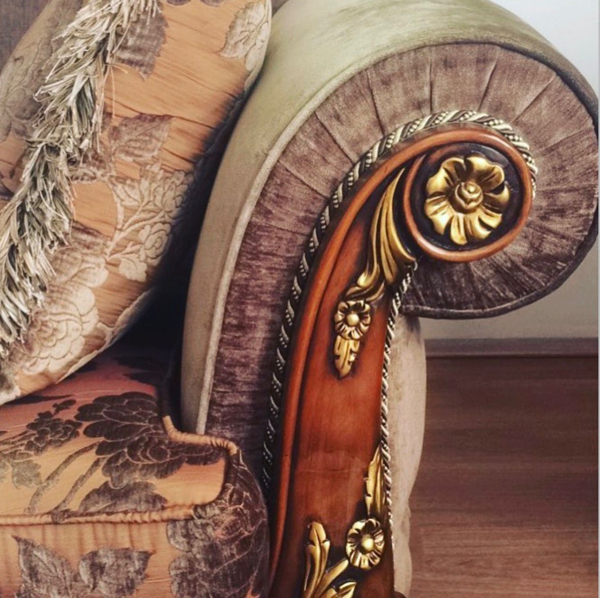
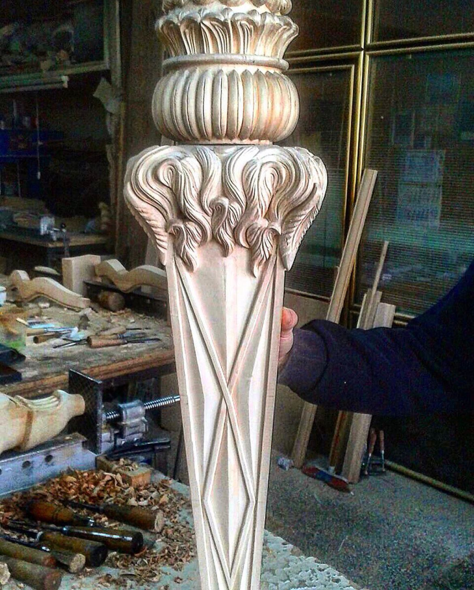
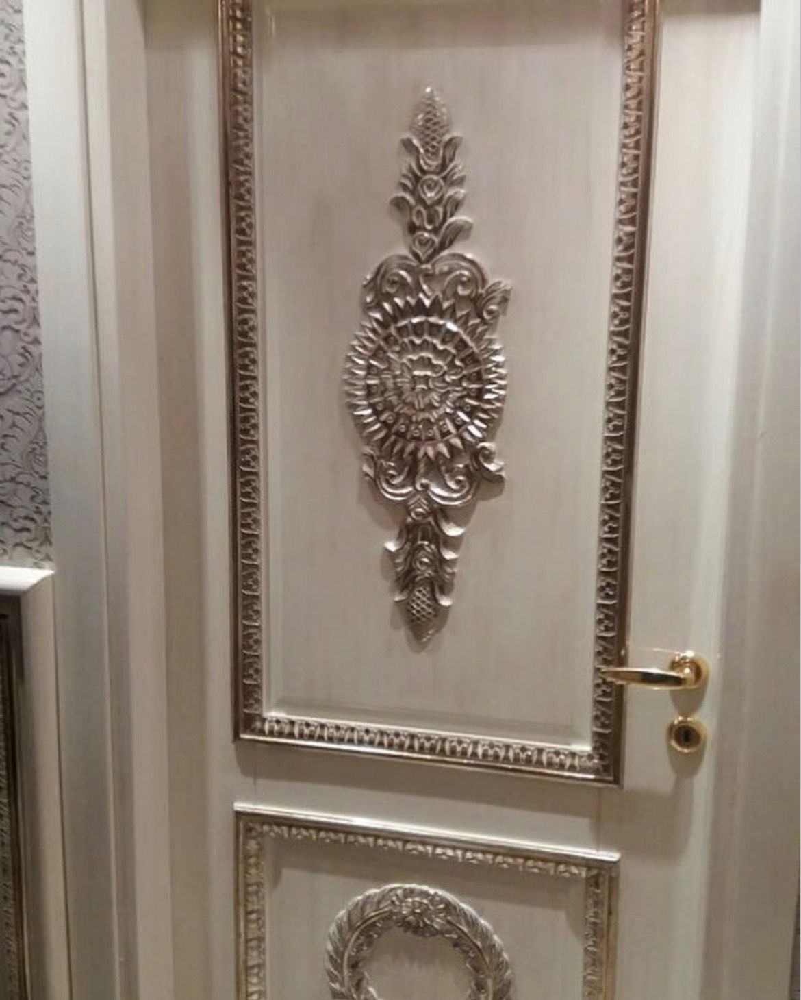
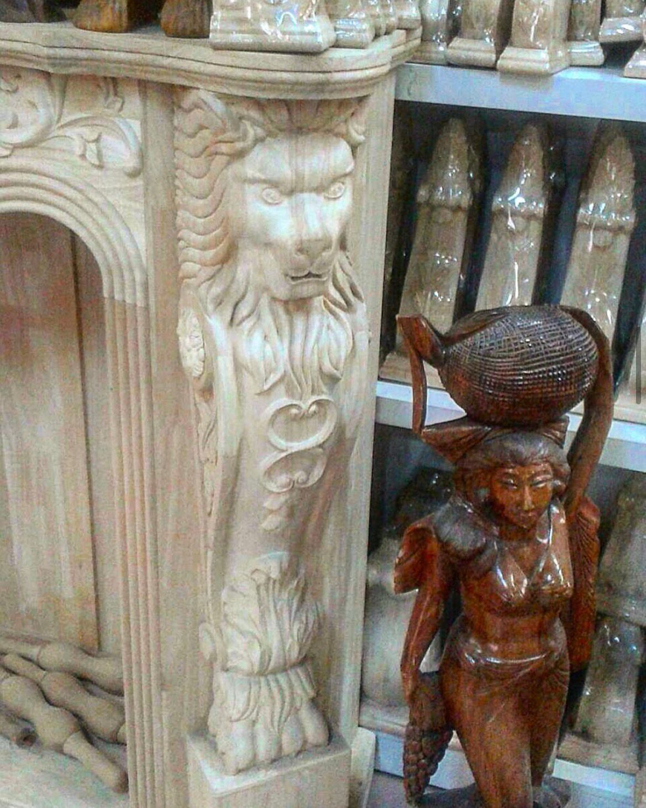
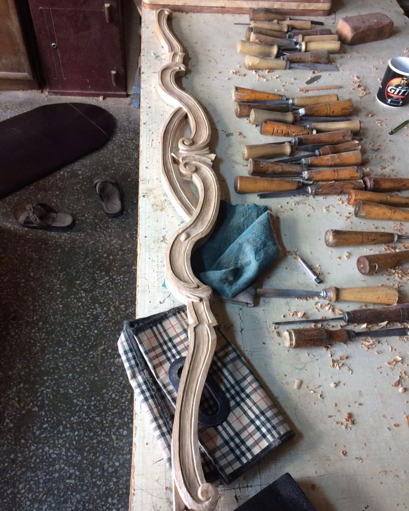
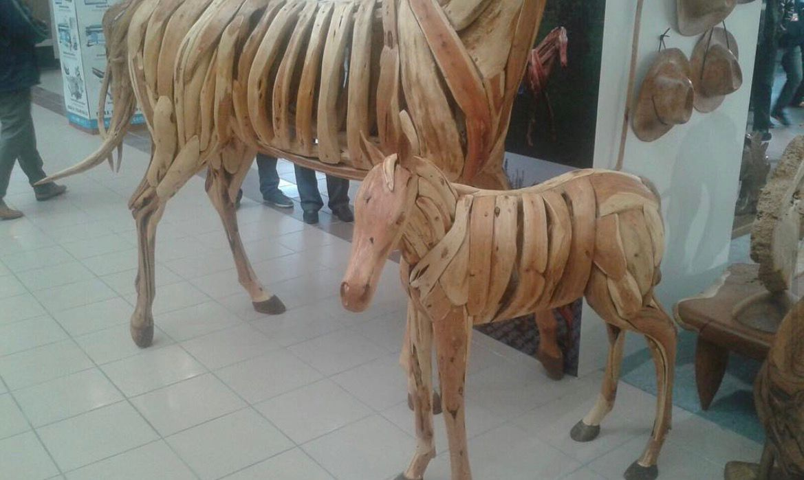
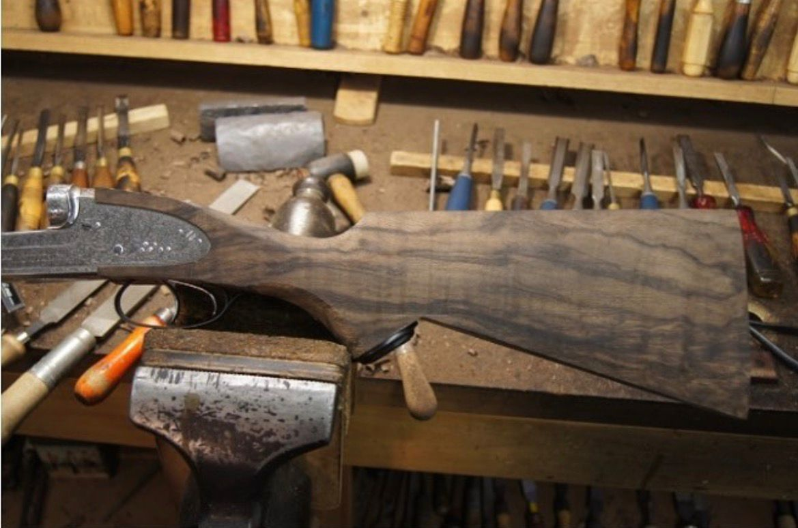
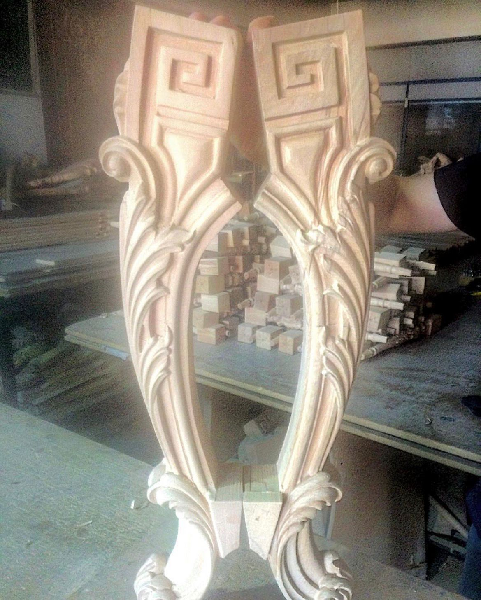
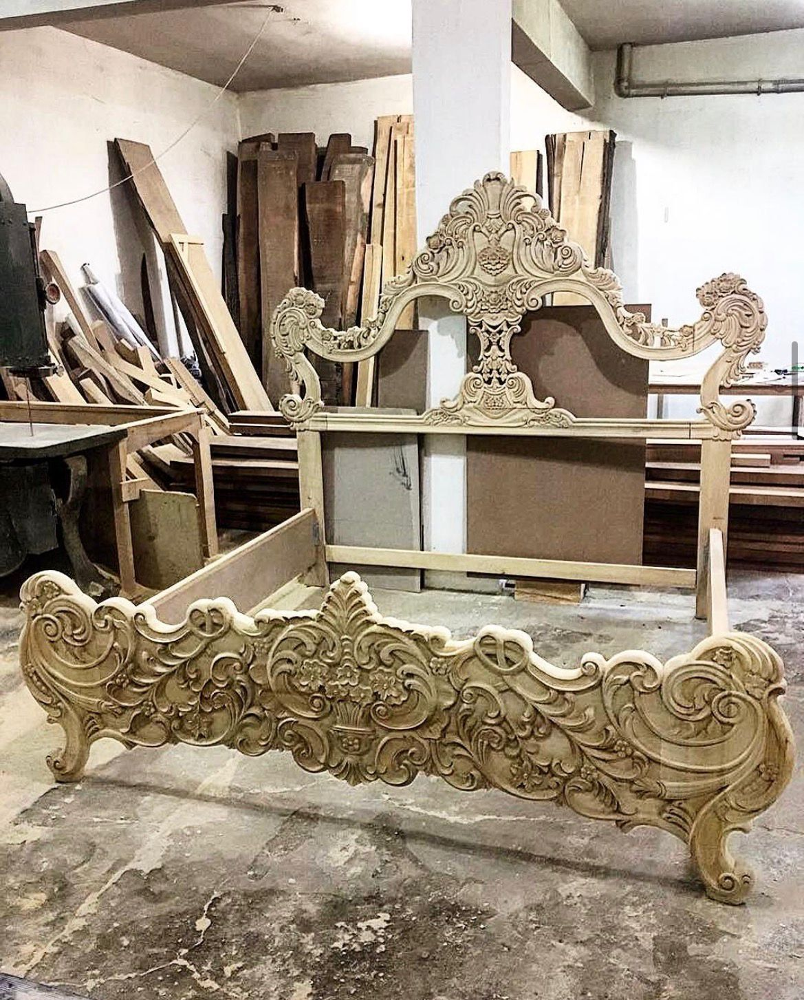
GEÇMİŞTEN GELECEĞE
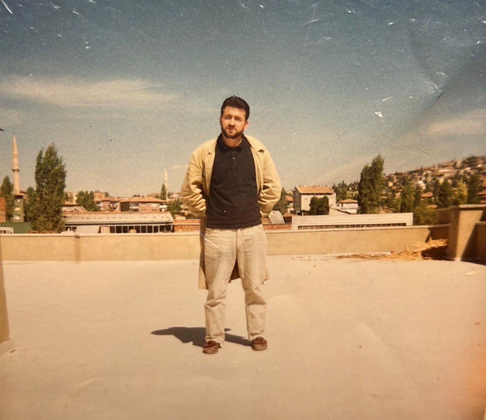
Ali Delialioğlu, 1976 yılında Ankara Siteler'e çırak olarak gelerek ahşap oyma sanatını öğrenmeye başladı.
Yıllar içerisinde edindiği tecrübenin ardından kendi atölyesini kurarak ahşaba şekil vermeye devam etti.
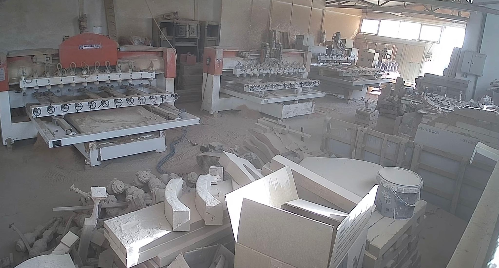
Başlangıçta ahşap üzerindeki detaylar geleneksel yöntemlerle, elle tek tek işleniyordu.
Teknolojinin gelişmesiyle birlikte CNC ve çeşitli ahşap işleme makineleri üretim sürecine dahil oldu.
1976 yılında Ankara Siteler'de çırak olarak ahşap oyma sanatını öğrenmeye başlayan Ali Delialioğlu, yıllar içerisinde edindiği tecrübeyle kendi atölyesini kurdu.
Baba mesleğini sürdüren Enes Delialioğlu, CNC makineleri ve modern üretim teknikleriyle Özen Oyma'nın çalışmalarını geleceğe taşıyor.
50 YILI AŞAN BİR YOLCULUK
BİZİMLE İLETİŞİME GEÇİN
Ahşap oyma ve CNC çalışmalarımız hakkında bilgi almak, çalışmalarımızı incelemek veya bizimle iletişime geçmek için bize ulaşabilirsiniz.